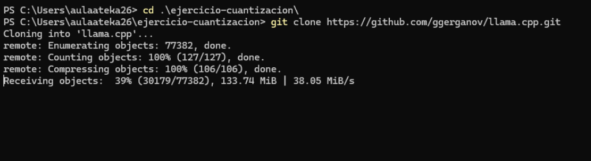

PREPARAR ENTORNO
- Crear directorio proyecto:
mkdir ejercicio-cuantizacion cd ejercicio-cuantizacion - Clonar llama.cpp (133MB):
 Figura 1: Clonación exitosa llama.cpp (133MB, 77k objetos).
Figura 1: Clonación exitosa llama.cpp (133MB, 77k objetos). - Entorno virtual + dependencias:

Figura 2: pip install requirements-convert-hf-to-gguf.txt (transformers, gguf, torch CPU).
python -m venv venv venv\Scripts\activate # Windows pip install -r requirements/requirements-convert-hf-to-gguf.txt
Dependencias: numpy 1.26.4, transformers 4.45+, gguf 0.17+, torch CPU.